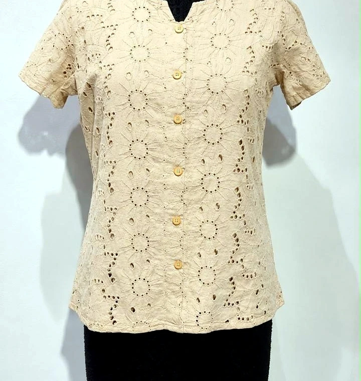
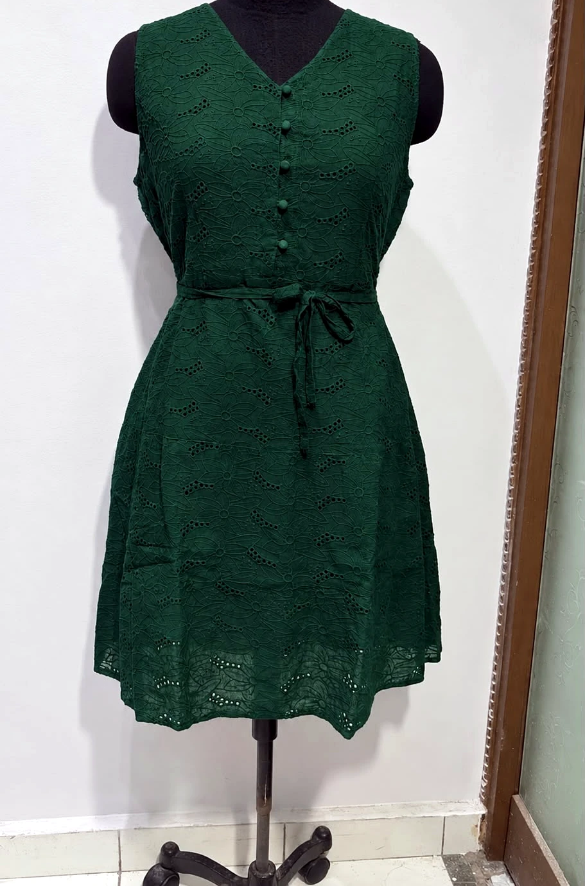
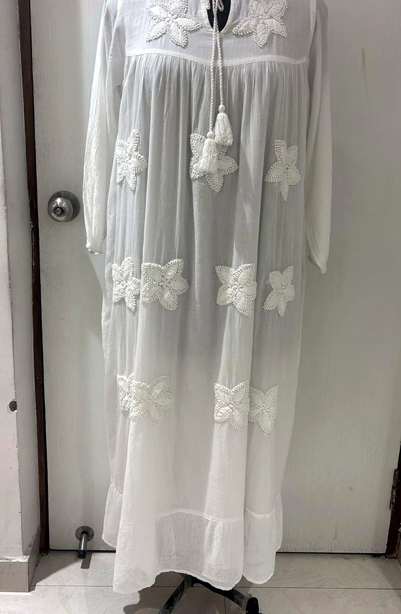

FABRIC & CRAFTSMANSHIP / 01
Schiffli.
Texture with intention.
Floral eyelet, openwork and embroidered surfaces bring dimension to cotton-led women's western wear. Final fabric, design and process are confirmed against each style brief.

SCHIFFLI / EYELET / CUTWORKSURFACE STUDIES
Patterns that
shape the story.
Explore visual directions for cotton eyelet and cutwork. These are illustrative references; the selected fabric and construction must be confirmed before sampling or production.


PRODUCT APPLICATIONS
From fabric
to silhouette.
Schiffli and cutwork can be considered across selected garment categories when the fabric and design call for it.
DEVELOP A SCHIFFLI COLLECTION